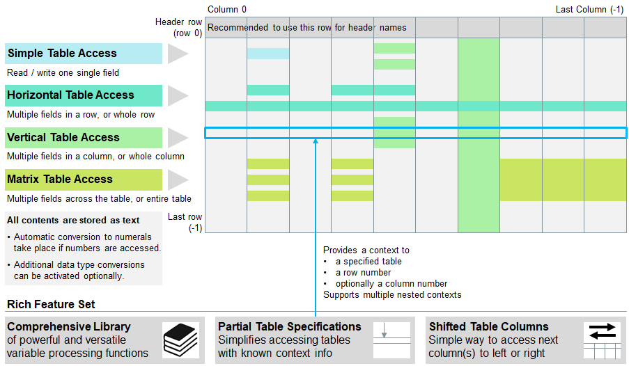

Introduction
Tables are the key objects on which this programming language has been developed for, namely to process tables of any size
effectively and efficiently with minimum amount of coding and delivering maximum possible execution performance. An extensive
function library for table functions providing rich features is available to process and verify tables.
All tables are 2-dimensional data structures which hold all information as strings (text), including numeric values,
boolean values, dates and sets. Different access methods are avaialble when accessing table contents directly.
